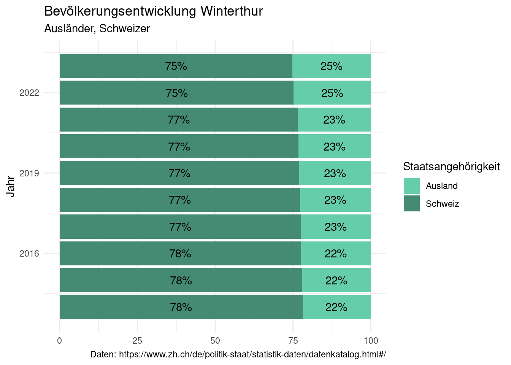
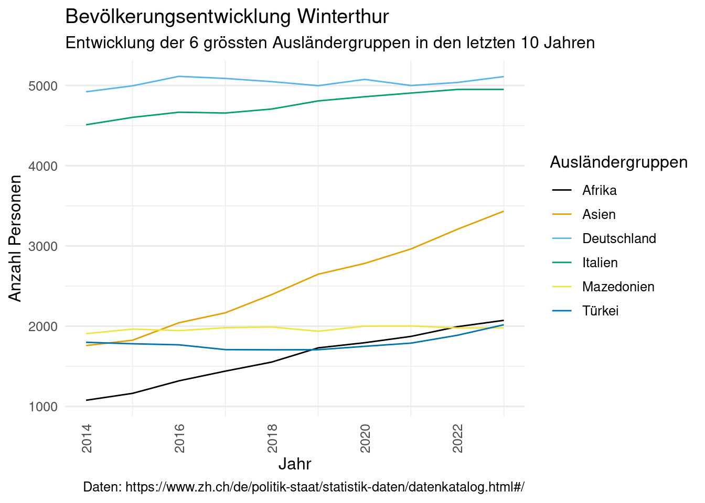

# Der Datenimport und die Datenbereinigung werden in 01-daten-aufbereitung.R vorgenommen
source(here::here("analyse/01-daten-aufbereitung.R"))Bevölkerungsentwicklung Stadt Winterthur
Einleitung
Im Rahmen des R-Kurses wird zum Abschluss von jedem Teilnehmer eine Projektarbeit erstellt. Die Anforderungen sind unter https://rstatszh-k009.github.io/website/abschlussprojekt/ zu finden. Das Abschlussprojekt bietet die Möglichkeit, die erlernten Fähigkeiten auf realen Datensätzen anzuwenden.
Daten
Titel: Bevölkerung der Stadt Winterthur, nach Staatenkleingruppe und Quartier
Bestand der wirtschaftlichen Wohnbevölkerung nach Staatenkleingruppe und Quartier per Ende Jahr. Eine vollständige Dokumentation ist der Ressource “Dokumentation Daten” zu finden.
Die Daten stammen vom Statistischen Amt des Kantons Zürich und sind unter folgendem Link abrufbar: https://www.zh.ch/de/politik-staat/statistik-daten/datenkatalog.html#/
Analyseziele
Mittels Datenaufbereitung und Visualisierung aufzeigen, wie sich die Zusammensetzung der Bevölkerung der Stadt Winterthur und in deren Stadtkreisen entwickelt hat.
Daten Aufbereitung
# Mit den nachstehenden Codes werden die Daten zu Objekten ausgewertet.
Bevölkerung_Winterthur_Stadtkreise <- winterthur_daten_bereinigt |>
group_by(stadtkreis, staatenkleingruppe, jahr) |>
summarise(summe = sum(anzahl, na.rm = TRUE))winterthur_fct <- winterthur |>
mutate(anzahl = factor(anzahl))
winterthur_fct$anzahl <- gsub("[^0-9.]", "", winterthur_fct$anzahl)
winterthur_fct$anzahl <- as.numeric(winterthur_fct$anzahl)
Summe_Jahr_ohne_CH<- winterthur_fct |>
group_by(jahr, staatenkleingruppe) |>
summarise(summe = sum(anzahl, na.rm = TRUE)) |>
filter(staatenkleingruppe != "Schweiz")
Groesste_Gruppen_Winterthur <- Summe_Jahr_ohne_CH |>
filter(staatenkleingruppe %in% c("Deutschland", "Italien", "Asien", "Mazedonien", "Türkei", "Afrika"))Summe_Jahr_ohne_CH |>
arrange(staatenkleingruppe, jahr) |>
group_by(staatenkleingruppe) |>
mutate(differenz = summe - lag(summe)) |>
ungroup()# A tibble: 200 × 4
jahr staatenkleingruppe summe differenz
<dbl> <chr> <dbl> <dbl>
1 2014 Afrika 1077 NA
2 2015 Afrika 1163 86
3 2016 Afrika 1319 156
4 2017 Afrika 1440 121
5 2018 Afrika 1553 113
6 2019 Afrika 1730 177
7 2020 Afrika 1794 64
8 2021 Afrika 1873 79
9 2022 Afrika 1994 121
10 2023 Afrika 2073 79
# ℹ 190 more rowsJaehrliche_Zunahme_AU_Winterthur <- Summe_Jahr_ohne_CH |>
arrange(staatenkleingruppe, jahr) |>
group_by(staatenkleingruppe) |>
mutate(differenz = summe - lag(summe)) |>
ungroup()winterthur_daten_bereinigt$staat_gruppe <- ifelse(winterthur_daten_bereinigt$staatenkleingruppe == "Schweiz", "Schweiz", "Ausland")
winterthur_daten_bereinigt$anzahl <-
as.numeric(winterthur_daten_bereinigt$anzahl)
Winterthur_total <- winterthur_daten_bereinigt |>
group_by(jahr, staat_gruppe) |>
summarise(sum = sum(anzahl, na.rm = TRUE)) |>
mutate(anzahl_in_prozent = sum / sum(sum) * 100)grösster_zuwachs_pro_jahr <- winterthur_daten_bereinigt |>
filter(staatenkleingruppe != "Schweiz") |>
group_by(stadtkreis, staatenkleingruppe, jahr) |>
summarise(summe = sum(anzahl, na.rm = TRUE)) |>
mutate(diff_zu_vorjahr = summe - lag(summe)) |>
filter(!is.na(diff_zu_vorjahr)) |>
group_by(jahr, stadtkreis) |>
summarise(summe = sum(diff_zu_vorjahr)) |>
filter(summe == max(summe))Daten Visualisierung
ggplot(data = Winterthur_total,
mapping = aes(x= jahr,
y= anzahl_in_prozent,
fill = staat_gruppe))+
geom_col()+
scale_fill_manual(values = c("aquamarine3", "aquamarine4")) +
geom_text(aes(label = paste0(round(anzahl_in_prozent,0), "%")),
position = position_stack(vjust = 0.5),
color = "black") +
coord_flip()+
labs(title = "Bevölkerungsentwicklung Winterthur",
subtitle = "Ausländer, Schweizer",
y = NULL,
x = "Jahr",
fill = "Staatsangehörigkeit",
caption = "Daten: https://www.zh.ch/de/politik-staat/statistik-daten/datenkatalog.html#/")+
theme_minimal()

ggplot(data = Groesste_Gruppen_Winterthur,
mapping = aes (x = jahr,
y = summe,
group = staatenkleingruppe,
color = staatenkleingruppe))+
geom_line()+
scale_color_colorblind()+
labs(title = "Bevölkerungsentwicklung Winterthur",
subtitle = "Entwicklung der 6 grössten Ausländergruppen in den letzten 10 Jahren",
y = "Anzahl Personen",
x = "Jahr",
color = "Ausländergruppen", shape = "Ausländergruppen",
caption = "Daten: https://www.zh.ch/de/politik-staat/statistik-daten/datenkatalog.html#/") +
theme_minimal(base_size = 12) +
theme(panel.grid.major.x = element_blank(),
axis.text.x = element_text(angle = 90,
vjust = 0.5))

grösster_zuwachs_pro_jahr |>
knitr::kable(caption = "pro Jahr")| jahr | stadtkreis | summe |
|---|---|---|
| 2015 | Wülflingen | 214 |
| 2016 | Oberwinterthur | 201 |
| 2017 | Wülflingen | 134 |
| 2018 | Seen | 166 |
| 2019 | Oberwinterthur | 309 |
| 2020 | Seen | 207 |
| 2021 | Stadt | 230 |
| 2022 | Oberwinterthur | 542 |
| 2023 | Stadt | 217 |
daten_stadtkreis <- winterthur_daten_bereinigt |>
group_by(stadtkreis, staatenkleingruppe, jahr) |>
summarise(summe = sum(anzahl, na.rm = TRUE)) |>
mutate(diff_zu_vorjahr = summe - lag(summe)) |>
mutate(diff_in_prozent = round(diff_zu_vorjahr * 100 / summe,2)) |>
filter(stadtkreis == params$stadtkreis, jahr == params$jahr) |>
knitr::kable(caption = paste("im Stadtkreis", params$stadtkreis, "im Jahr", params$jahr))
daten_stadtkreis| stadtkreis | staatenkleingruppe | jahr | summe | diff_zu_vorjahr | diff_in_prozent |
|---|---|---|---|---|---|
| Wülflingen | Afrika | 2015 | 213 | 57 | 26.76 |
| Wülflingen | Amerika | 2015 | 99 | 4 | 4.04 |
| Wülflingen | Asien | 2015 | 261 | 67 | 25.67 |
| Wülflingen | Australien und Ozeanien | 2015 | 0 | 0 | NaN |
| Wülflingen | Bosnien u. Herzegowina | 2015 | 50 | -1 | -2.00 |
| Wülflingen | Deutschland | 2015 | 656 | 41 | 6.25 |
| Wülflingen | Italien | 2015 | 809 | 27 | 3.34 |
| Wülflingen | Kosovo | 2015 | 283 | 5 | 1.77 |
| Wülflingen | Mazedonien | 2015 | 259 | -5 | -1.93 |
| Wülflingen | Nordeuropa | 2015 | 24 | 1 | 4.17 |
| Wülflingen | Osteuropa und Russland | 2015 | 0 | 0 | NaN |
| Wülflingen | Portugal | 2015 | 187 | 5 | 2.67 |
| Wülflingen | Schweiz | 2015 | 11690 | 273 | 2.34 |
| Wülflingen | Serbien | 2015 | 206 | -20 | -9.71 |
| Wülflingen | Spanien | 2015 | 112 | -1 | -0.89 |
| Wülflingen | Türkei | 2015 | 214 | 18 | 8.41 |
| Wülflingen | Westeuropa | 2015 | 64 | 5 | 7.81 |
| Wülflingen | unbekannt | 2015 | 8 | 7 | 87.50 |
| Wülflingen | Österreich | 2015 | 58 | -10 | -17.24 |
| Wülflingen | übriges Mitteleuropa | 2015 | 149 | -11 | -7.38 |
| Wülflingen | übriges Südosteuropa | 2015 | 25 | 25 | 100.00 |
Ergebnisse
In Figure 1 ist die Zusammensetzung der Bevölkerung der Stadt Winterthur nach Herkunft dargestellt. Ebenso zeigt die Visualisierung, wie sich der Ausländeranteil von 2014 bis 2023 entwickelt hat. Es ist offensichtlich, dass der Anteil Ausländer an der städtischen Bevölkerung stetig wächst.
In Figure 2 wird aufgezeigt, wie sich die grössten 6 Ausländergruppen entwickeln. Die grössten Anteile machen die Deutschen und die Italiener aus. Während der Zuwachs bei den Deutschen und den Mazedoniern in den letzten Jahren eher gering ist, sind die Zugänge bei den Asiaten und Afrikanern rasant angestiegen.
Aus Table 1 geht hervor, in welchem Jahr und in welchem Stadtkreis der Zuwachs der ausländischen Bevölkerungen am stärksten gestiegen ist.
Die Table 2 zeigt die Zusammensetzung und Entwicklung der Bevölkerung der im YAML-Berichtskopf ausgewählten Parameter Stadtkreis und Jahr.
Schlussfolgerungen
Die Bevölkerung der Stadt Winterthur nimmt stehtig zu
Der Ausländeranteil der Bevölkerung der Stadt Winterthur nimmt stehtig zu
Den grössten Anteil an der ausländischen Bevölkerung stellen die Deutschen und die Italiener
Die grösste Zuwanderung in den letzten 10 Jahren erfolgte aus Asien und Afrika
Der Stadtkreis mit der höchsten Zuwanderung ändert von Jahr zu Jahr